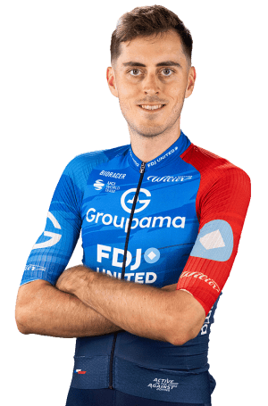

Clément Berthet
Datos Personales
- Clément Berthet
- 02/08/1997
- Francia
- GROUPAMA-FDJ UNITED
- 91

Datos equipos
- Delko
- AG2R Citroën
- Groupama-FDJ United
Temporada 2025
| Nombre del dato | Resultado |
|---|---|
| Mercan'Tour Classic Alpes-Maritimes | 5º |
| National Championships France ME - Road Race | 6º |
| Classic Grand Besançon Doubs | 8º |
| Second stage of the Vuelta a Burgos | 11º |
| First stage of the Tour de Romandie | 12º |
| Second stage of the Tour de Romandie | 13º |
Multimedia
Equipo GROUPAMA-FDJ UNITED en la Vuelta Ciclista a España 2026.